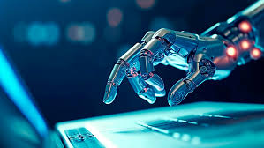

Las imagenes y la IA

La generación de imágenes con inteligencia artificial es una tecnología que permite crear imágenes automáticamente a partir de descripciones en texto u otros datos. En lugar de dibujar o diseñar manualmente, la IA interpreta instrucciones y genera imágenes originales en cuestión de segundos.
¿Cómo funciona?
Esta tecnología utiliza modelos de aprendizaje profundo entrenados con millones de imágenes. La IA aprende patrones, formas, colores y estilos, lo que le permite crear nuevas imágenes basadas en lo que el usuario describe. Por ejemplo, puedes escribir "un perro volando en el espacio" y la IA generará una imagen acorde a esa idea.
Historia resumida
La generación de imágenes con IA comenzó a desarrollarse con técnicas de aprendizaje automático en los años 2000. Sin embargo, el gran avance llegó en la década de 2010 con la aparición de redes generativas como las GANs (Redes Generativas Adversarias), que permitieron crear imágenes más realistas.
En los últimos años, nuevos modelos han mejorado significativamente la calidad de las imágenes, logrando resultados muy detallados y creativos a partir de simples textos.
Aplicaciones
Actualmente, esta tecnología se utiliza en diseño gráfico, publicidad, videojuegos, redes sociales y arte digital. Permite crear ilustraciones, conceptos visuales y contenido creativo de manera rápida y accesible.